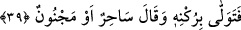

Firavun’dan ve boğulmaktan kurtulmasında ibretler kıldık.” Bu hâliyle atıf, tıpkı şu
cümleyi söyleyen kimsenin yaptığı atfa benzer: “Hayvana saman ve soğuk su yedirdim.”
Oysa bunun asıl mânâsı, “hayvana saman yedirdim ve soğuk su içirdim” şeklindedir.
Aksi takdirde “fî Mûsâ” diye başlayan cümle, “tereknâ” fiilinin ma’mülü olamaz. “Bu
kentlerde ibretler bıraktık” cümlesi sahih olurken, ikincisinde “Mûsâ’da bir ibret
bıraktık” gibi bir mâna çıkacaktır ki bu da doğru değildir. Çünkü “terk” fiili, bir şeyin
ibkâ edildiğini haber verir. Mûsâ (a.s.) bâki olmadığına göre, Mûsâ’nın orada yaptığı
şey nasıl bâki olabilir?
“Onu açık bir delil ile Firavn’e göndermiştik.” Burası bir âyetle veya mahzuf bir
“kâineten” kelimesiyle mansubtur ki bunun takdiri: “Onu gönderdiğimiz vakit olan
şeyde” şeklindedir. Bu ihtimale göre burası mukadder bir fiilin zarfıdır.
“Onu açık bir delil ile” yâni Mûsâ (a.s.)’ın eliyle zâhir olan asâ, yed-i beyzâ ve
diğerleri gibi yüce mûcizelerle Mısır’ın sâhibi (kralı) olan “Firavn’e göndermiştik.”
“Sultan” kelimesi pek çok şey için kullanılmakta olan bir masdardır.
39. Firavun ordusuyla birlikte yüz çevirmiş: «O, bir büyücüdür veya bir delidir»
demişti.
“Firavun ona yanını çevirdi,” yanını döndü. Tevellâ fiili, “yüz çevirmek”ten
kinâyedir. Yâni Firavun, Musa’ya îmandan yüz çevirdi ve onu yalancılıkla suçladı.
Aslında “tevellî”, yüz çevirmek mânâsına gelmektedir. “Bi ruknihî” kelimesindeki “bâ”
harf-i cerri tâdiye yâni ilgili fiili geçişli kılmak içindir. Nitekim “(ve neâ bi cânibihî:
yüz çevirir; yan çizer” (Fussilet 41/51) âyetinde bâ harfi “neâ” fiilini müteaddi kılarak
ona “uzaklaştı” anlamını vermiştir.
“Rüknden murad, uç ve yan demektir. Kişinin uç tarafı ve yanından kasdedilen de
onun kendi zâtıdır. Zîra çoğu kez kişinin, birinden yüz çevirmesi bu iki kelime yâni “sırt
çevirme” ve “yan çizme” ile ifâde edilmektedir. Sahih kaynakların verdiği bilgiye göre
de bir şeyin rüknü, insanın omuz kısmı gibi, bir şeyin en kuvvetli tarafıdır.
Bir görüşe göre âyetin yorumu şöyledir: “Firavun saltanatı ve askerlerinden aldığı
kuvvetine dayanarak, bunlara güvenerek yüz çevirdi.” Dolayısıyla “rükn” burada
“kuvvet” anlamında kullanılmıştır. Çünkü rükn, insanın dayandığı bir dayanaktır ki bu,
mal, asker ve kuvvetten biri olabilmektedir. Bu âyetteki rükünle, binaların
kuvvetlendirildiği tel ve direklere benzetilerek onun ordusu kasdedilmiştir. Bu takdirde
bâ harfi cerri sebebiye, mülâbese veya müsâhabe mânâlarını içerir.
Firavun Mûsâ (a.s)’ya, “Bu, ya büyücü” olağanüstü şeylerle insanların gözlerini
boyayan bir sihirbaz “veya cinli”; işinin sonunu düşünmeyen bir dîvâne’dir, dedi.”
Mecnun, cinnet sâhibi kimseye denir. Cinnet ise aklın zevâl ve fesadıdır. Firavun da